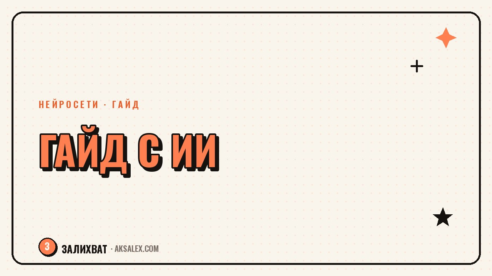

Как создать и продать гайд с помощью нейросети

Гайд - это короткий, понятный документ с твоим опытом на одну конкретную тему. Его покупают не потому, что там сто страниц, а потому что он экономит время и закрывает боль. Раньше на такой продукт уходили недели: структура, текст, дизайн, редактура. С нейросетью весь путь от идеи до готового PDF можно пройти за пару вечеров, если делать это по порядку, а не хаотично.
Зачем блогеру вообще делать гайд
Гайд закрывает конкретный вопрос аудитории здесь и сейчас. Человек не готов покупать твою консультацию или курс, но готов заплатить небольшую сумму за инструкцию, которая решает одну его задачу за 15-20 минут чтения.
Второй плюс - это первый шаг к доверию. После покупки гайда человек видит, как ты объясняешь, структурируешь мысли и держишь обещание. Если гайд полезный, дальше проще предложить более дорогой продукт.
- Гайд проверяет спрос дёшево и быстро
- Формирует базу первых покупателей
- Не требует съёмок и монтажа видео
- Можно обновлять и продавать повторно
С чего начать: тема и боль аудитории
Хороший гайд отвечает на один конкретный вопрос, а не пытается охватить всю тему сразу. Посмотри, что люди чаще всего спрашивают в комментариях и переписках - это и есть готовые темы, которые уже подтверждены спросом.
Как сузить тему
Возьми широкую область своей экспертности и раздели её на маленькие задачи. Не 'гайд по нейросетям', а 'как за вечер собрать контент-план на месяц через нейросеть'. Чем уже формулировка, тем понятнее человеку, за что он платит.
Гайд продаёт не объём знаний, а скорость результата. Человек платит за то, что ему не нужно разбираться самому.
Как нейросеть помогает собрать структуру и текст
Нейросеть хорошо справляется с рутиной: собрать план по шагам, предложить заголовки разделов, свести черновые заметки в связный текст. Твоя задача - дать ей факты и свой опыт, а не просить придумать историю с нуля.
Рабочая последовательность такая: сначала надиктуй или запиши своими словами весь опыт по теме, без структуры. Потом попроси нейросеть разбить это на логичные шаги и предложить заголовки. После - перечитай и убери всё, что звучит не твоим голосом.
- Черновик своими словами - без редактуры
- Структура и заголовки - с помощью нейросети
- Финальная вычитка - обязательно вручную
- Примеры и цифры - только реальные, свои
| Этап | Что делаешь ты | Что делает нейросеть |
|---|---|---|
| Идея | Формулируешь боль аудитории | Предлагает варианты заголовков |
| Структура | Отбираешь важные шаги | Собирает план из твоих заметок |
| Текст | Пишешь примеры и опыт | Причёсывает формулировки |
| Проверка | Вычитываешь на живость языка | Ищет повторы и лишние слова |
Оформление: обложка и вёрстка без дизайнера
Гайду не нужен сложный дизайн, ему нужна читаемость. Один шрифт для заголовков, один для текста, достаточно воздуха между блоками и заметная нумерация шагов - этого хватает для аккуратного вида.
Для обложки подойдут нейросети, которые генерируют изображения по текстовому запросу, или доступный редактор с готовым шаблоном. Главное - крупный заголовок, который читается на маленьком превью, и один яркий акцентный цвет.
Что обязательно должно быть внутри
- Оглавление на первой-второй странице
- Короткое вступление: кому и зачем гайд
- Пронумерованные шаги вместо сплошного текста
- Итоговый чек-лист в конце
Как выставить гайд на продажу
Для старта не нужен отдельный сайт. Подойдёт карточка товара в существующем сервисе приёма платежей, ссылка на которую ты закрепишь в профиле и разошлёшь тем, кто интересовался темой раньше.
Опиши результат, а не содержание. Вместо 'внутри 20 страниц про контент-план' напиши 'через час у тебя будет готовый план постов на месяц'. Людей интересует итог, а не количество страниц.
Первую партию продаж часто дают не случайные покупатели, а те, кто уже читал твои посты и задавал похожие вопросы. Напиши им лично или сделай пару постов с анонсом до старта продаж.
Частые ошибки при запуске гайда
Самая частая ошибка - тянуть с публикацией, доводя текст до идеала. Гайд можно и нужно обновлять после первых отзывов, а не ждать момента, когда всё будет безупречно.
- Слишком широкая тема без конкретного результата
- Текст, который нейросеть не адаптировала под твой стиль
- Отсутствие цены на старте - 'подумаю потом'
- Нет обратной связи от первых читателей
Если после первых продаж приходят одни и те же вопросы - добавь на них ответы в следующую версию гайда. Так продукт становится сильнее с каждым обновлением.
Частые вопросы
Сколько страниц должно быть в гайде?
Столько, сколько нужно, чтобы закрыть один конкретный вопрос. Это может быть и 8 страниц, и 25 - объём определяет тема, а не желание сделать документ солиднее.
Можно ли писать гайд полностью с помощью нейросети?
Нет, если хочешь, чтобы он звучал как ты и приносил доверие. Нейросеть хороша для структуры и черновой сборки текста, а опыт, примеры и финальный голос должны быть твоими.
Как понять, что тема гайда вообще будет продаваться?
Посмотри на вопросы, которые тебе уже задавали в комментариях и переписках несколько раз. Если тема поднимается снова и снова - спрос на неё уже подтверждён.
Нужен ли отдельный сайт для продажи гайда?
На старте нет. Достаточно карточки товара в сервисе приёма платежей и ссылки, которую ты разместишь в профиле и постах.
Что делать, если после запуска гайд почти не покупают?
Проверь формулировку результата в описании и покажи гайд тем, кто уже интересовался темой лично. Часто дело не в продукте, а в том, что о нём не узнали те, кому он нужен.
а не вручную